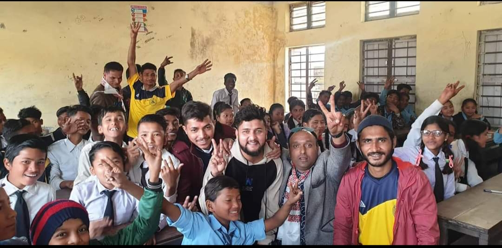

 The Nepal Children Literature Festival, an annual event organized by "Prasfutan Family" and in collaboration with various stakeholders, aims to showcase diverse forms of art from children across the nation. This 3-day festival, scheduled for February 2024, will encompass literature, art, music, drama, dance, photography, film, sculpture, painting, and documentaries, symbolizing the essence of "Navarasa." Established in 2023, NCLF has become a key event in Nepal's cultural calendar, representing the most diverse children's literature festival in the country. The festival attracts respected authors, poets, speakers, musicians, filmmakers, and artists from both Nepal and around the world. Featuring over 20 events, including author talks, poetry readings, live music, film screenings, theatre performances, workshops, and more, NCLF anticipates engaging over 50,000 attendees annually.